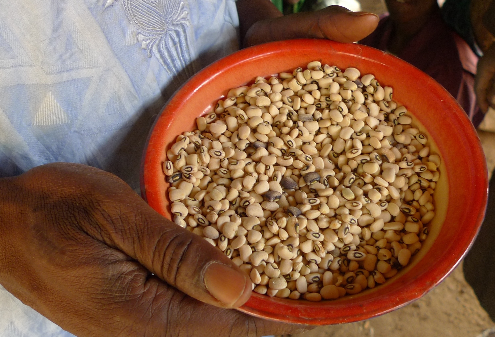
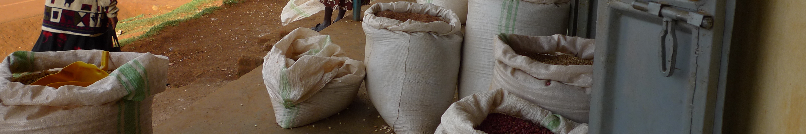

A disproportionately large share of the poor in Sub-Saharan Africa, and especially of the ultra-poor, live in rural areas, rely on agriculture, self-employment, and casual wage labor markets in the informal sector as their primary source of earnings, and rely on food markets as their primary source of consumption goods. Despite the overall macroeconomic growth and improved governance enjoyed broadly across the continent, farms remain small, many African smallholder farmers still use few modern inputs, and widespread market failures impede optimal allocation of labor, land and other factors of production.
Structural transformation requires, in particular, productivity growth, which itself depends on increased uptake of improved technologies and inputs that improve the productivity of land and especially labor. It also requires progress in remedying labor, land and financial market failures that impede not only technology adoption, but also efficient resource allocation and investment. It further requires improved efficiency and value addition in connecting farmers to markets, as well as enhanced resilience in the face of growing risks due to climate, market and political shocks.
Most of the extant analysis of structural transformation relies on macro-level data sources and economywide modeling, but newly available household- and individual-level data sources, such as the Living Standards Measurement Study-Integrated Surveys on Agriculture (LSMS-ISA) expand the potential to understand constraints facing African farmers and behaviors underlying the macro-level trends. Leveraging the opportunities provided by such data will provide powerful guidance to policymakers who aim to accelerate the pace of agricultural transformation.
The special issue is forthcoming. Please check back for a link.